Below are some of the projects that I've worked on. Some of them I
created in my spare time just for fun, while others were for my
university.
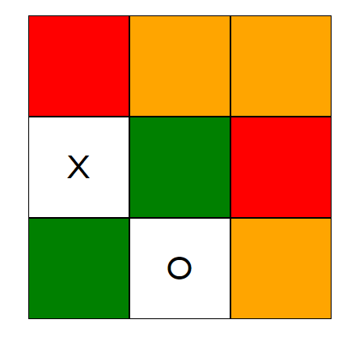
Tic Tac Toe AI
I created a C++ program for finding optimal strategies for the game of tic-tac-toe. It uses a bottom-up variant of the Minimax algorithm. The Javascript frontend communicates with the C++ backend using IPC (inter-process communication).
The colors of the cells represent the following:
Red - The AI can force a win
Orange - The AI can force a draw
Green - If the player plays optimally, they can win.
Technologies used:
- Node.js processes
- express.js
- Heroku
- Object Oriented C++
- Clang compiler
- HTML, CSS, Javascript, Node.js
Source Code
Learn more
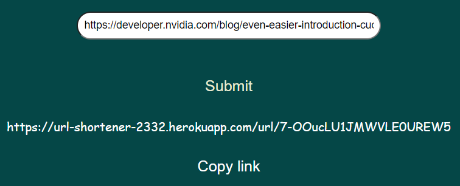
URL shortener
A straightforward URL shortener. Uses vanilla Javascript for the frontend, express.js for the backend and Mongodb Atlas as the database.
Make sure the URL being shortened starts with https://
Technologies used:
- HTML, CSS, Javascript, Node.js
- Mongodb Atlas
- express.js
Source Code
Learn more
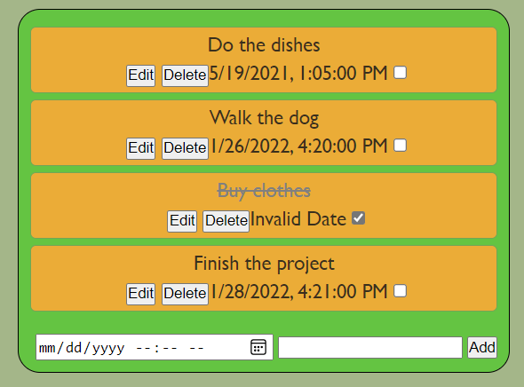
Todo list app
A todo list app with the capabilities of editing, deleting and marking todos as done.
The frontend of this app is done without any frameworks, using vanilla javascript.
The data is being saved into a NoSQL database (Mongodb Atlas)
Technologies used:
- HTML, CSS, Javascript, Node.js
- Mongodb Atlas
- express.js
Source Code
Learn more
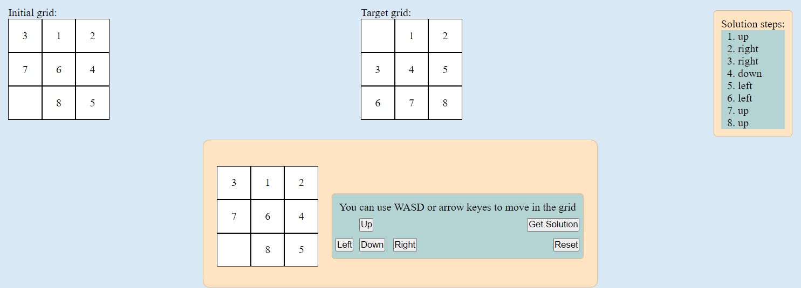
Generalized Game of 8 (15 puzzle)
This is a more general version of the Game of 8. You can specify a custom board size.
The app uses web workers and BFS/A-star algorithms for finding solutions to given problems on separate CPU threads.
The javascript code is structured using OOP and modules for better readability and maintainability. The app does not use any frameworks.
Technologies used:
- HTML, CSS, Javascript, Node.js
- Object Oriented Programming
- Web workers
- express.js
- Heroku
Source Code
Learn more
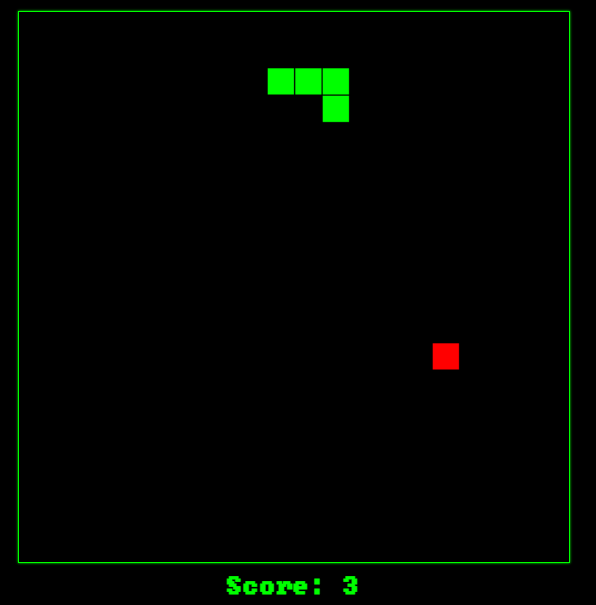
Snake
A javascript implementation of snake hosted on Github pages. Uses HTML5 Canvas for rendering and vanilla javascript.
Technologies used:
- HTML5 Canvas
- HTML, CSS, Javascript
- Github pages
Source Code
Learn more
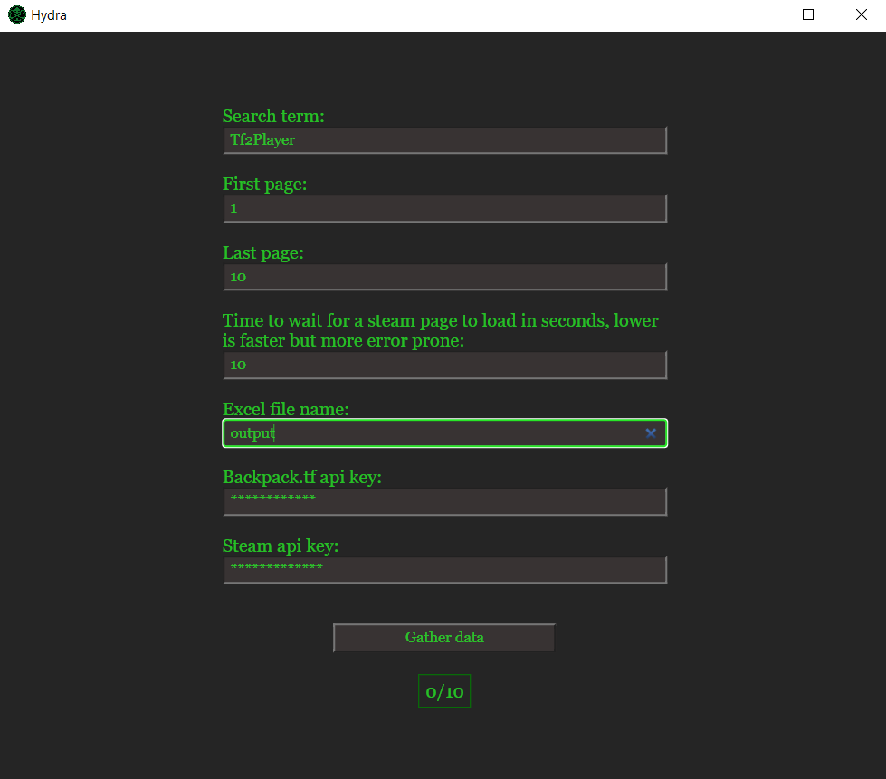
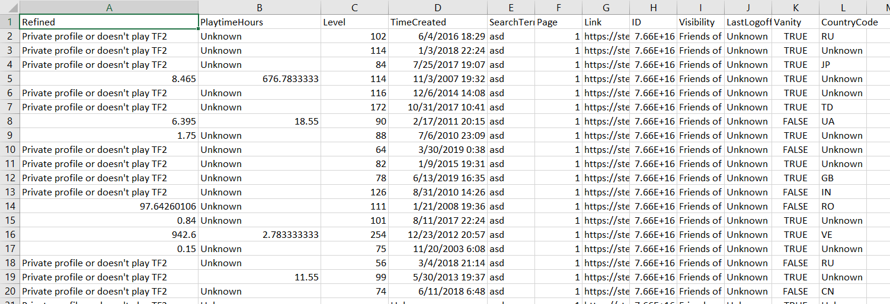
Steam trade helper
This is an application for finding suitable people to trade items with in the videogame Team Fortress 2. The app uses electron.js to run outside of a browser.
It uses puppeteer.js to find users by scraping data from Steam. This website is dynamically generated, which is why scraping it is not trivial.
The app uses the backpack.tf and Steam APIs to find out data about found users. It then extracts the data as a Microsoft Excel file for further data filtering and analysis.
The frontend of this application is written using React.js
Technologies used:
- Electron.js
- React.js
- Puppeteer.js
- Sass
Source Code
Learn more
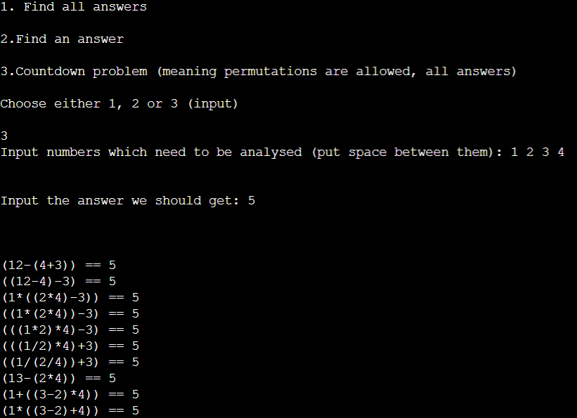
The Countdown problem solver
This program solves the Countdown problem.
It uses C++ for fast computations and outputs all possible solutions. It also informs you if no solutions exist.
Example: Given 75 50 2 3 8 7 and 812 as an input, the program would output 7*(75 + 50 + 2 - 8 - 3) == 812
Technologies used:
- C++
- My own arithmetic expression parser
- My own fractional library
- Various combinatorial algorithms
Source Code
Learn more
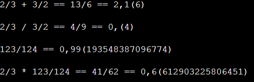
C++ Fraction library
A library for representing fractions in C++. Can also be used to calculate decimal expansions to a specified precision level. Support for periodic decimal expansions.
Technologies used:
- Object Oriented C++
- Various algorithms
Source Code
Learn more
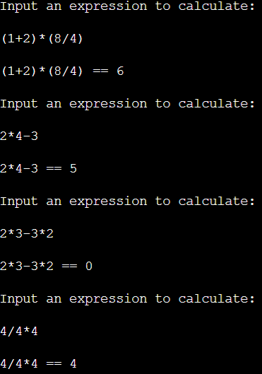
Infix expression calculator
This is a C++ program for calculating arithmetic expressions. The infix expressions are first converted to postfix, and then evaluated.
Technologies used:
- C++
- Shunting yard algorithm
Source Code
Learn more
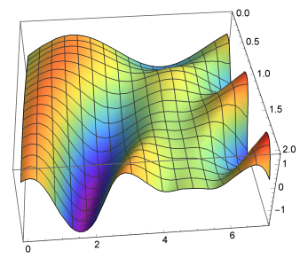
Heat equation solver
Mathematical paper about implicit and explicit algorithms for solving the heat equation and their convergence criteria.
The algorithm is then implemented in C++ and tested with various time step and machine epsilon values. The results are then tested using Wolfram Mathematica.
Technologies used:
Source Code
Learn more
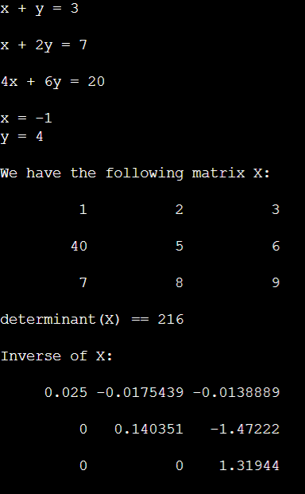
Linear Algebra library (WIP)
A Linear Algebra library that supports matrix operations, finding determinants, matrix inversions, solving of linear systems of equations and more.
Technologies used:
- Object Oriented C++
- Various algorithms
Source Code
Learn more
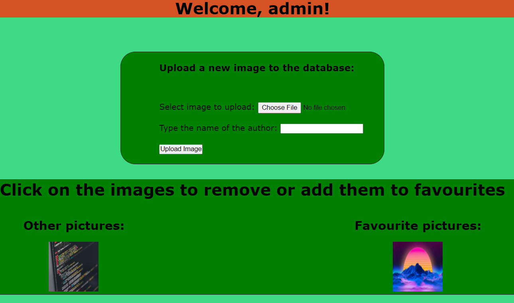
Gallery website
A website written using PHP and MySQL. The database has one-to-one, one-to-many and many-to-many relationships.
Email authorization and authentication are implemented. An admin panel is added for editing user data and registering users.
Technologies used:
- PHP
- PHP MyAdmin
- PHPMailer
- PHP Composer
- Sessions and cookies
- Apache webserver
- MariaDB
- WAMP Server
Source Code
Learn more
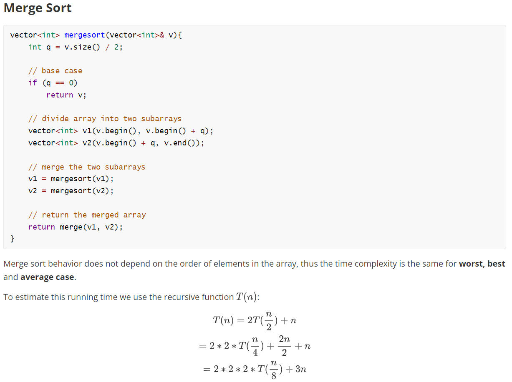
Sorting algorithm benchmarking paper
A project paper that outlines various sorting algorithms, calculates their time and space complexities and
benchmarks them to investigate their asymptotic behavior based on implementation details.
Technologies used:
- C++
- C++ STL
- Chrono library for timing
Source Code
Learn more
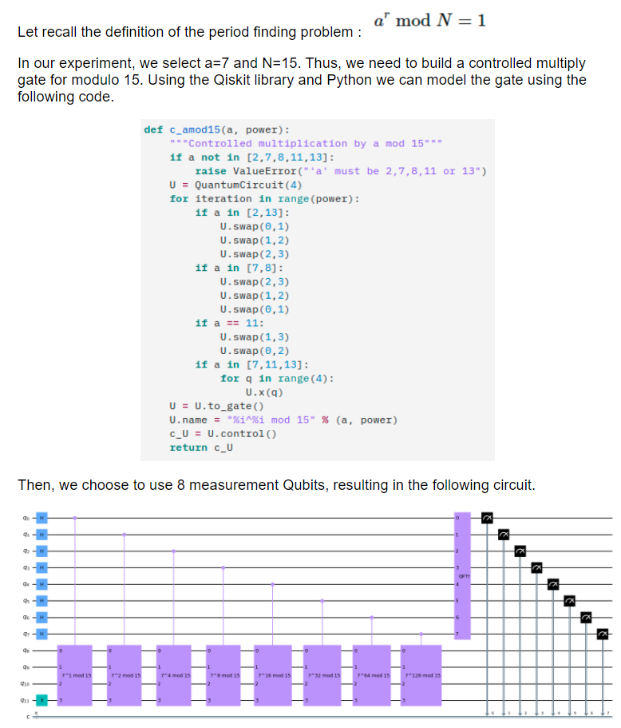
Shor's quantum algorithm paper
A paper on Shor's algorithm for integer factorization and period finding. The algorithm is implemented as a quantum circuit on the Qiskit quantum computer for benchmarking and analysis.
Source Code
Learn more
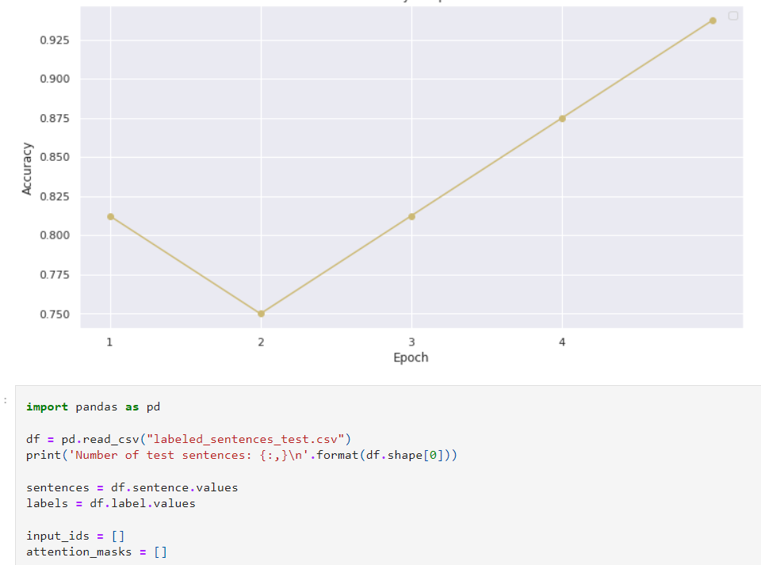
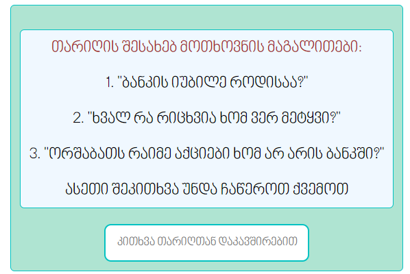
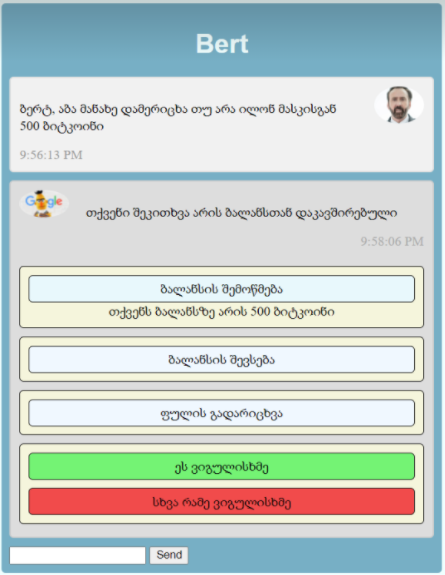
Neural network trainer for chatbot-type applications
Used transformer fine-tuning to fine tune the multilingual Google BERT transformer for classifying messages in the Georgian language. Achieved very good results with very little data.
Created a website for gathering training and test data from the public and trained a machine learning model on said data.
Afterwards, created a mock chat application to show how said network trainer could work in practice. The chatbot could learn from previous conversations.
Technologies used:
- Bidirectional Encoder Representations from Transformers (BERT)
- Transfer learning
- Pytorch
- Huggingface
- Numpy
- Pandas
- Node.js processes
- Google colab
- Express.js
- Mongodb Atlas
- HTML, CSS, Javascript, Python, Node.js
Source Code
Learn more
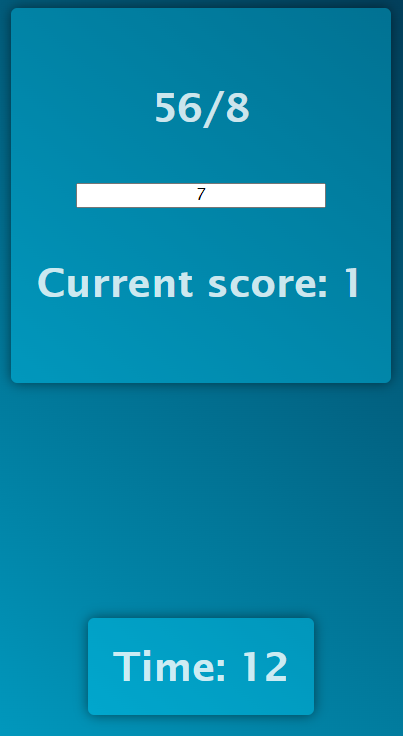
Math game
A game written in react where you need to answer as many arithmetic questions correctly in the time alloted as you can.
Technologies used:
Source Code
Learn more
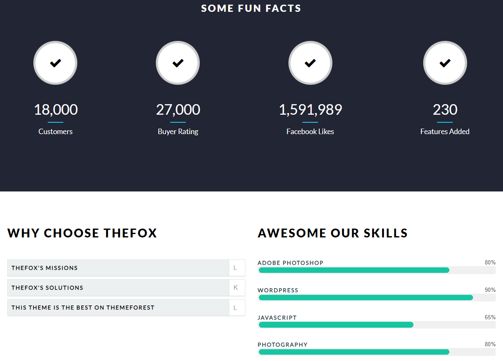
Website design implementation
Implemented a nice website design from an Adobe XD mockup
Technologies used:
Source Code
Learn more